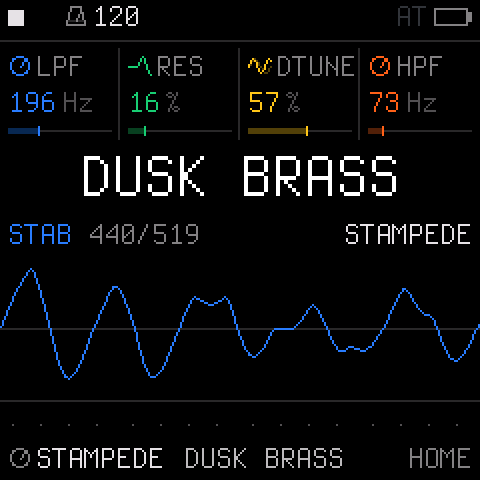
26 synthesis engines and 819 sounds, 9 filter models, a modulation matrix on every sound and 13 tunings. Free and open source. Install it from your browser, and edit every sound on your computer.
Built on Clipper by 3dSam (isod89), which grew out of SLOOP and Felucca by Leo Kuroshita / Hügelton Instruments: most of what Stallion does is theirs. Where Stallion adds or rebuilds, it builds on other open projects too, such as OberVave by zvenson for RODEO; every one is named in the credits. It is all GPL-3.0: free for everyone to play, change and build on.
26 moteurs de synthèse et 819 sons, 9 modèles de filtre, une matrice de modulation sur chaque son et 13 accordages. Libre et gratuit. Installe-le depuis ton navigateur, et édite chaque son sur ton ordinateur.
Bâti sur Clipper de 3dSam (isod89), lui-même issu de SLOOP et de Felucca de Leo Kuroshita / Hügelton Instruments : l'essentiel de ce que fait Stallion vient d'eux. Là où Stallion ajoute ou reconstruit, il s'appuie aussi sur d'autres projets libres, comme OberVave de zvenson pour RODEO ; tous sont nommés dans les crédits. Tout est sous GPL-3.0 : libre pour tous, à jouer, modifier et prolonger.
26 の音源エンジンと 819 の音色、9 種類のフィルター・モデル、すべての音色にモジュレーション・マトリクス、13 のチューニング。無料のオープンソース。ブラウザからインストールでき、パソコンですべての音色を編集できます。
Stallion は 3dSam（isod89）の Clipper をもとに作られています。Clipper は SLOOP と、Leo Kuroshita / Hügelton Instruments の Felucca から生まれました。Stallion の機能の多くは彼らのものです。追加・作り直した部分も、RODEO の zvenson による OberVave など、ほかのオープンなプロジェクトの上に作られており、すべてクレジットに記載しています。すべて GPL-3.0 で、誰でも自由に演奏し、改造し、もとにして作れます。
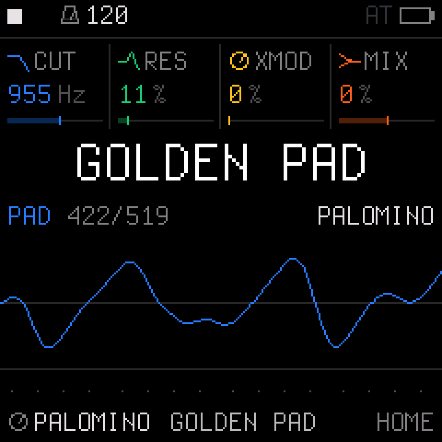
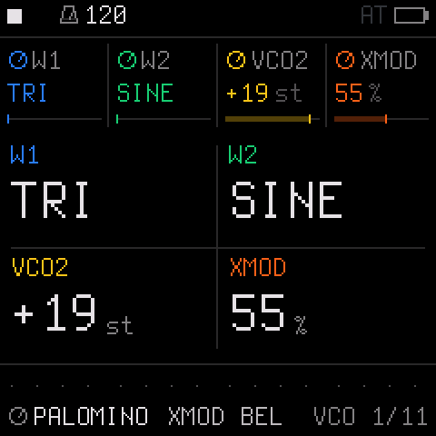
PALOMINO
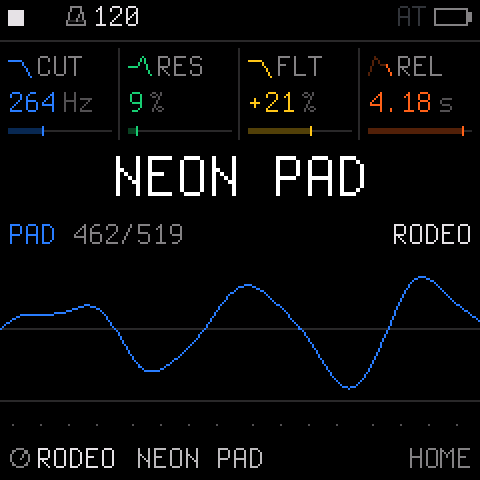
RODEO
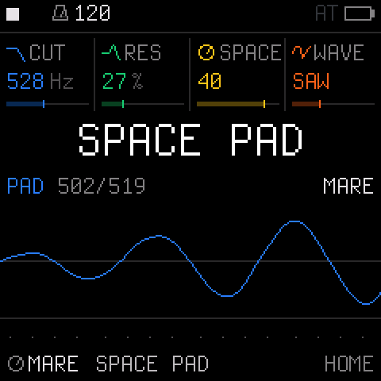
MARE
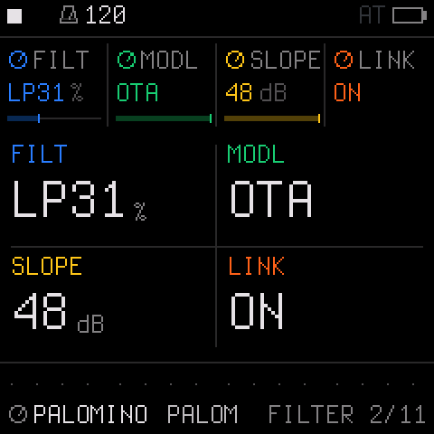
FILTER: the OTA model, SLOPE 48 dB, LINK on">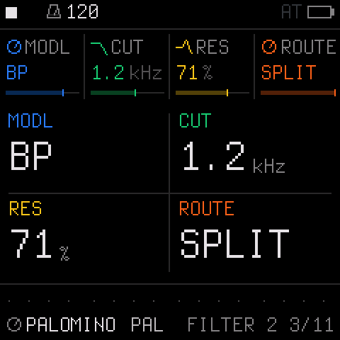
FILTER 2: band-pass, resonance 71 %, ROUTE SPLIT">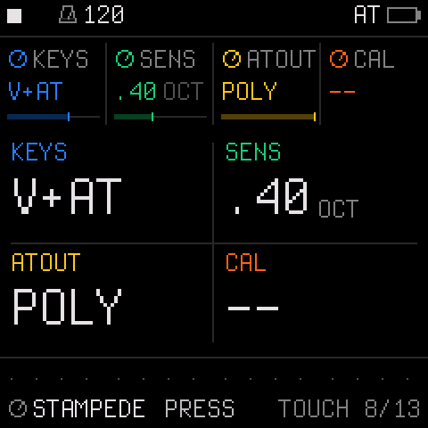
TOUCH on the FM-1: KEYS V+AT, SENS, ATOUT POLY">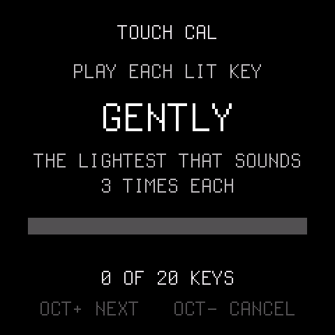
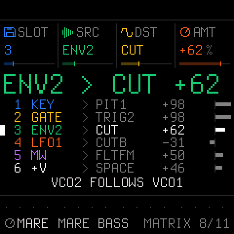
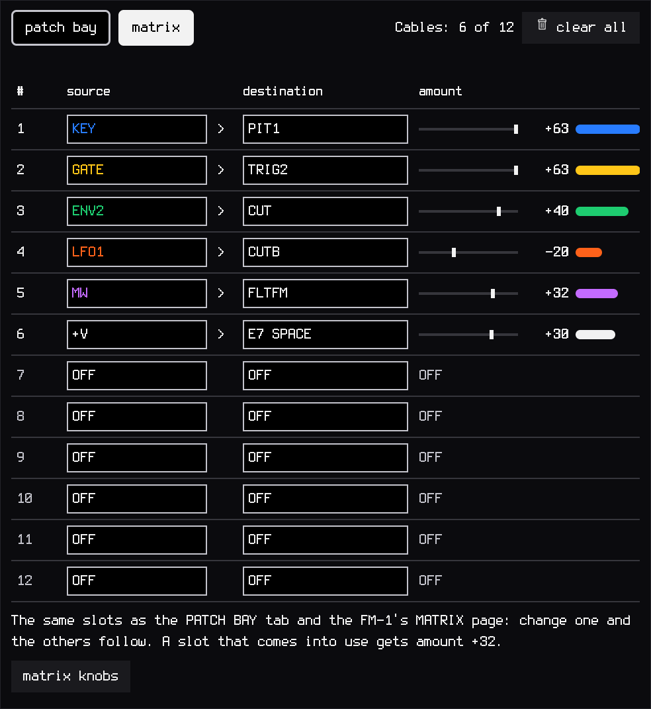
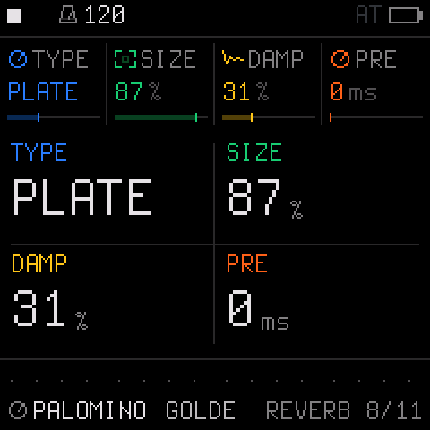
REVERB: TYPE PLATE">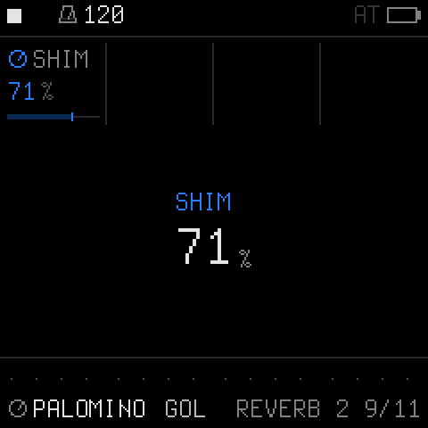
REVERB 2: SHIM 71 %">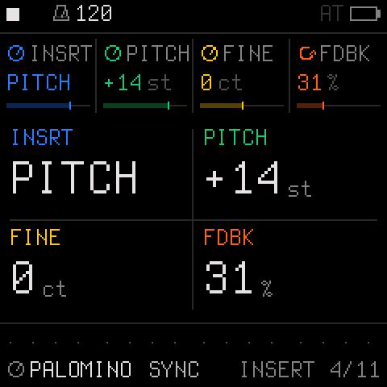
INSERT: PITCH, a pitch shifter, with feedback">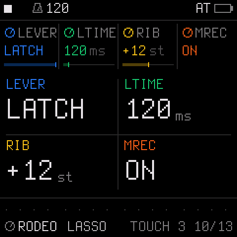
TOUCH 3 on the FM-1: LEVER LATCH, LTIME 120 ms, RIB +12 st, MREC ON">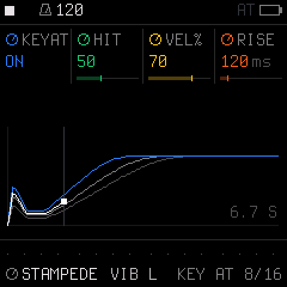
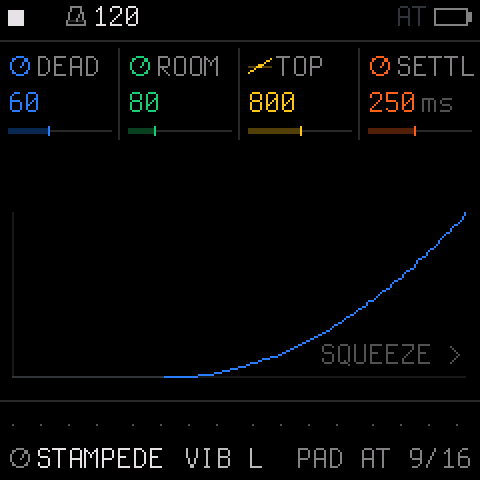
- PALOMINO
- STAMPEDE
- RODEO
- MARE
- HYBRID
- PONY
- FMX
- FM6
- DIGITAL
- WAVE
- WSEQ
- VECTOR
- ANALOG
- ACID
- STRINGS
- MACRO
- PHASE
- VPS
- TERRAIN
- PHYS
- TRIO
- WHEEL
- VOICE
- NOISE
- GRAIN
- SAMPLE
Stallion is free, open-source firmware under the GPL-3.0-only licence, by Eberon Limited (John Gorman). It stands on the work of others, and keeps their names on it:
- Clipper and Clipper Pro by 3dSam (isod89): Stallion grew out of Clipper, the synthesizer firmware for the FM-1, and Clipper Pro, its SMK-37 port (with M. Geisler).
- SLOOP by isod89: the groovebox firmware Clipper grew out of, and the model for this site and its guide.
- Felucca by Leo Kuroshita (@kurogedelic), Hügelton Instruments: the open firmware for the FM-1 that all of them are based on.
- Many more, for engines, effects, fonts and tools: every one is named in CREDITS.md, with the licences in LICENSING.md.